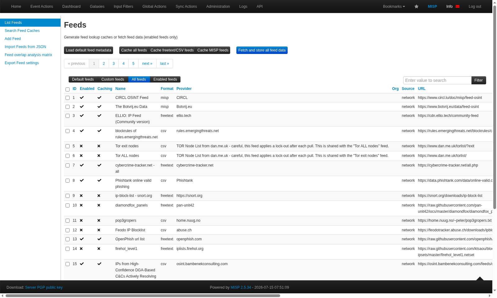
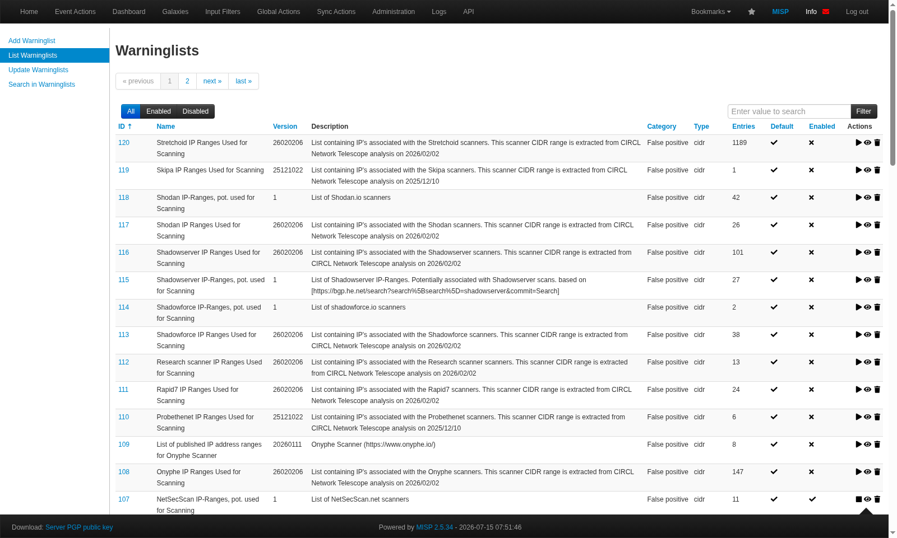
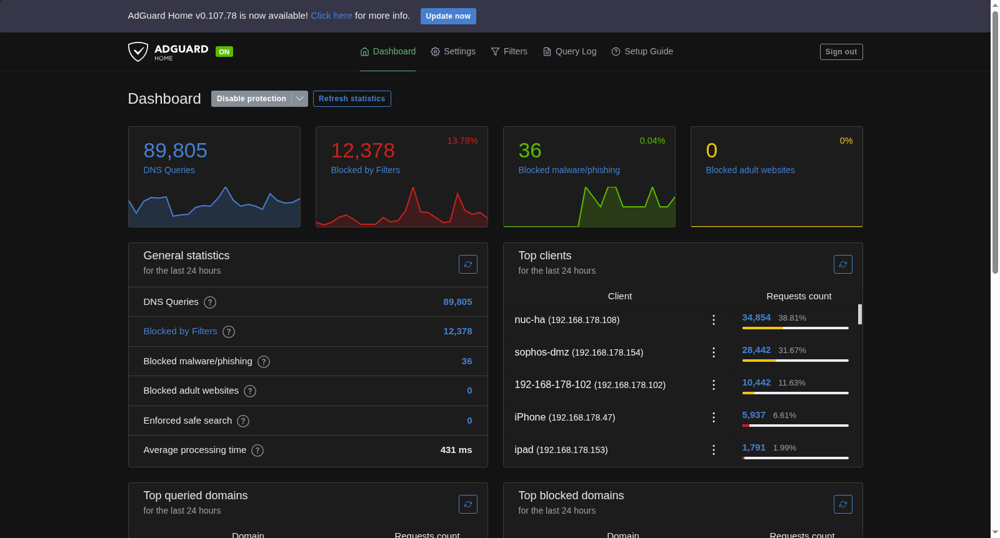
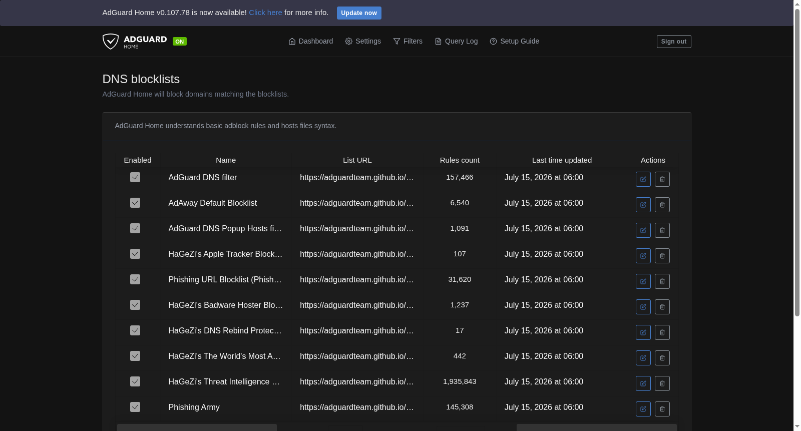
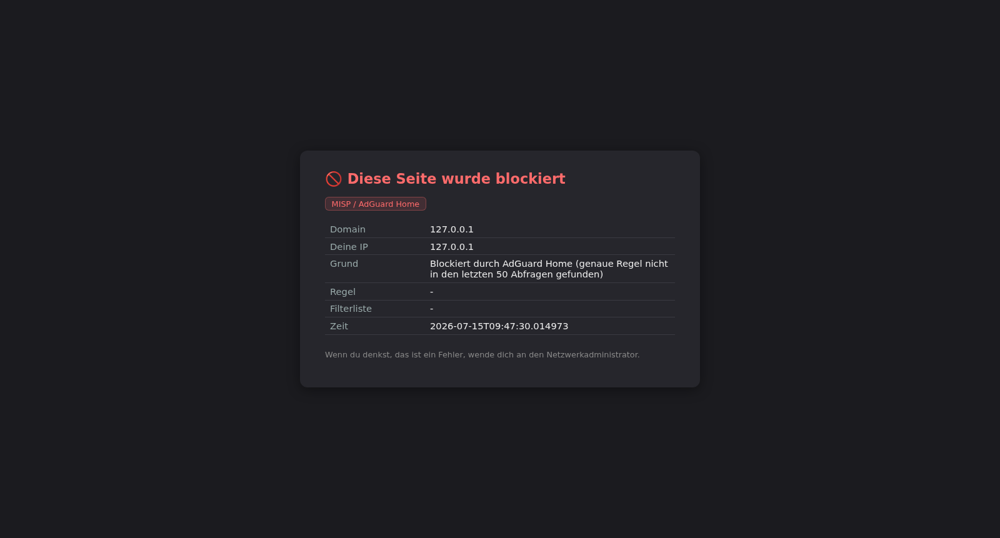
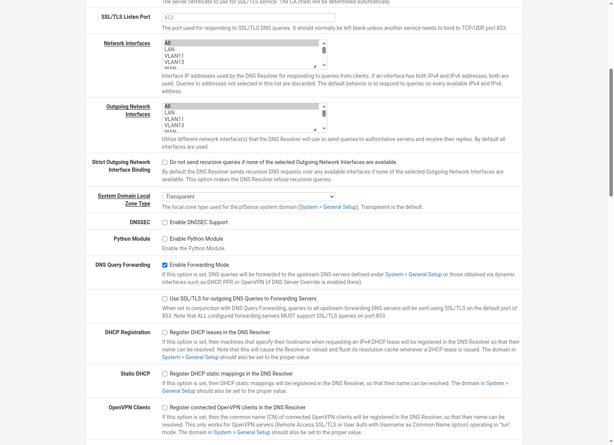
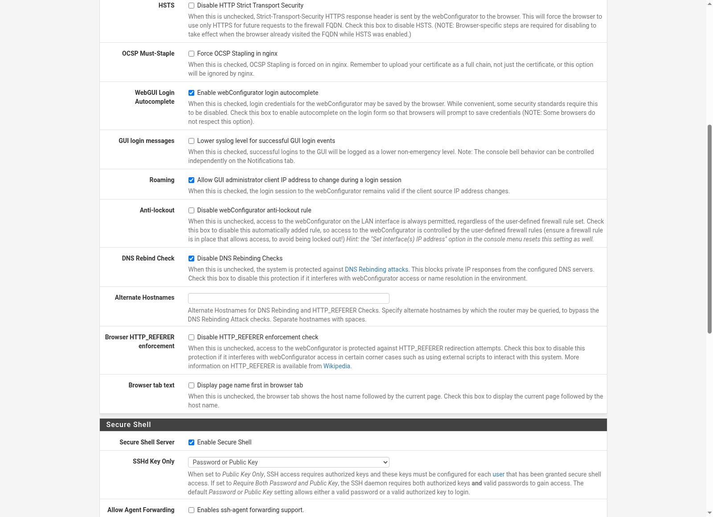

DNS-Security: MISP, AdGuard & pfSense
Die Heim-MISP-Instanz (Malware Information Sharing Platform) liefert Threat-Intelligence-Feeds (IP- und Domain-IOCs), die automatisiert in AdGuard Home (DNS-Blocking für alle WLAN-Clients) und pfBlockerNG (IP-Blocking auf der WAN-Seite von pfSense) eingespeist werden. Ergänzt wird das um eine eigene Blockseite (HTTP+HTTPS) und einen täglichen HTML-Mail-Report der geblockten Anfragen.
Architektur-Überblick
flowchart TB
MISP["MISP
85 Threat-Feeds
(CIRCL, ELLIO, ET, Phishtank, ...)"]
SYNC["misp-ioc-sync.py
(Cron alle 6h)"]
ADGUARD["AdGuard Home
DNS-Filter"]
PFB["pfBlockerNG
IPv4-Liste (WAN inbound)"]
BLOCKPAGE["Blockseite
(Port 8099, HTTP+HTTPS)"]
REPORT["Täglicher Mail-Report
(07:00 Uhr)"]
MISP -- "to_ids=1 + Warninglist-Filter" --> SYNC
SYNC -- "Domain-Feed" --> ADGUARD
SYNC -- "IP-Liste" --> PFB
ADGUARD --> BLOCKPAGE
ADGUARD -- Querylog --> REPORT
WIFI["WLAN-Clients
(Bad!Net 192.168.178.0/24)"] -- DNS --> ADGUARD
MGMT["Management-Netz
10.10.0.0/24 u.a. VLANs"] -- DNS --> PFSENSE["pfSense / unbound
(Forwarding Mode)"]
PFSENSE -- "Forward (einzige Quelle!)" --> ADGUARD
WAN["Internet (WAN)"] -- IP-Traffic --> PFB
Zwei getrennte Blocking-Pfade decken die zwei Netz-Segmente ab: WLAN-Clients (Bad!Net) nutzen AdGuard direkt als DHCP-DNS-Server, während pfSense für das Management-Netz (10.10.0.0/24 und weitere interne VLANs) den DNS-Verkehr an AdGuard weiterleitet (siehe pfSense-Forwarding unten). IP-basierter Schutz für Traffic, der pfSense direkt Richtung Internet passiert, läuft zusätzlich über pfBlockerNG.
MISP: IOC-Sync-Skript
Das Skript /opt/misp-ioc-sync/misp-ioc-sync.py läuft alle 6 Stunden per Cron und
zieht per REST-API alle to_ids=1-Attribute (IP-dst/-src, Domain/Hostname) –
gefiltert über enforceWarninglist=1, um False Positives zu vermeiden (dazu gleich mehr).
Ergebnis: eine Domain-Liste für AdGuard und eine IP-Liste für pfBlockerNG, beide über HTTP von
NUC-HA ausgeliefert.

MISP Feed-Konfiguration: aktivierte Community-Threat-Feeds (CIRCL, ELLIO, Emerging Threats, Phishtank u.a.)
Warninglists gegen False Positives
MISP liefert Warninglists (z.B. CDN-Ranges, öffentliche DNS-Resolver, Microsoft/Azure-Ranges, Top-10000-Domains, VPN/Datacenter-Ranges), die verhindern, dass weit verbreitete, harmlose Adressen fälschlich als IOC übernommen werden. Ein gutes Dutzend wichtiger Listen war standardmäßig deaktiviert und musste erst aktiviert werden – ohne sie wären etliche legitime Dienste geblockt worden.

MISP Warninglists: reduzieren False Positives, indem bekannte harmlose Ranges/Domains von der IOC-Übernahme ausgeschlossen werden
cake authkey <email> ist
in der verwendeten Version defekt – er gibt einen plausibel aussehenden API-Key aus, der aber
nie in der Datenbank landet. Funktionierender Ersatz:
cake user change_authkey <email> <40-hex-key> (Key vorher selbst z.B. per
openssl rand -hex 20 erzeugen).
AdGuard Home Integration
Der MISP-Domain-Feed wird in AdGuard als zusätzliche Custom-Filterliste registriert. Da das WLAN (Bad!Net) AdGuard ohnehin schon als DHCP-DNS-Server nutzt, greift der Schutz dort ohne weitere Client-Konfiguration.

AdGuard Home Dashboard mit Top-Clients – sichtbar auch der pfSense-Host (hier noch mit altem PTR-Namen "sophos-dmz")

AdGuard DNS-Blocklisten: öffentliche Listen plus der MISP-Custom-Feed (weiter unten in der Liste)
Custom-Blockseite statt NXDOMAIN
Statt einer nichtssagenden NXDOMAIN-Antwort zeigt AdGuard bei geblockten Domains
(blocking_mode: custom_ip) eine kleine, selbst gehostete Info-Seite: Domain,
Client-IP, Blockierungsgrund und die auslösende Filterliste. Läuft als eigener systemd-Dienst
auf Port 8099, über Apache sowohl per HTTP als auch HTTPS (selbstsigniertes Zertifikat) erreichbar
– aus beiden betroffenen Netzen (Bad!Net und Management-Netz).

Custom-Blockseite: zeigt Domain, Client-IP, Grund und Regel statt einer nichtssagenden NXDOMAIN-Antwort
pfSense: DNS-Schutz fürs Management-Netz
Das WLAN wird über AdGuard als DHCP-DNS-Server automatisch geschützt. Für das Management-Netz (10.10.0.0/24 und weitere interne VLANs, die pfSense/unbound als DNS-Server nutzen) war das nicht der Fall – unbound löste bis dahin rein rekursiv auf, ganz am MISP-Feed vorbei. Die Lösung: pfSense im Forwarding-Modus an AdGuard hängen, statt eine eigene, parallele Blockliste in pfBlockerNG (DNSBL) zu pflegen.

pfSense DNS Resolver: Forwarding Mode aktiv, DNSSEC-Validierung bewusst deaktiviert
Damit die Sinkhole-Antworten von AdGuard tatsächlich beim Client ankommen, waren zwei weitere, sicherheitsrelevante Anpassungen nötig:
| Einstellung | Warum nötig | Akzeptierter Trade-off |
|---|---|---|
| Nur ein Forwarder (AdGuard, kein 1.1.1.1/9.9.9.9 parallel) | unbound wählt bei mehreren Forwardern selbst per Latenz-Messung aus – würde AdGuard sonst unvorhersehbar umgehen | AdGuard wird Single-Point-of-Failure für DNS im Management-Netz |
| DNSSEC-Validierung deaktiviert | unsignierte Sinkhole-Antworten von AdGuard wurden sonst als
harden-dnssec-stripped verworfen |
Kein DNSSEC mehr direkt auf pfSense (AdGuard/dessen Upstreams validieren weiterhin) |
| DNS-Rebinding-Schutz deaktiviert | eine öffentliche Domain, die auf eine private IP auflöst, ist exakt das Sinkhole-Muster – wurde sonst als Rebinding-Angriff geblockt | Global deaktiviert (einfachste Lösung, auf User-Wunsch statt Subnetz-Scoping) |

System → Advanced → Admin Access: DNS Rebinding Check deaktiviert
isset($config['unbound']['dnssec']),
nicht den tatsächlichen Wert. Ein leerer String im Config-Array zählt schon als aktiviert.
Nur ein vollständiges unset() des Schlüssels schaltet DNSSEC wirklich ab.
Warum native pfBlockerNG-DNSBL nicht funktioniert hat
Der ursprüngliche Plan war, den MISP-Domain-Feed direkt als pfBlockerNG-DNSBL-Liste einzubinden
(rein auf pfSense, ohne AdGuard-Umweg). Rohe Config-Array-Schreibzugriffe auf
pfblockerngdnsblsettings wurden von pfSense beim Speichern jedoch stillschweigend
wieder auf einen leeren String zurückgesetzt – nach zwei Anläufen wurde der Ansatz zugunsten
der Forwarding-Lösung aufgegeben, statt auf einer Produktiv-Firewall weiter blind an einem
undokumentierten Schema zu raten.
Tägliches Mail-Reporting
/opt/adguard-blockpage/daily-report.py verschickt morgens um 07:00 Uhr eine
HTML-Mail mit Top-Quell-IPs, Top-geblockten-Domains, Grund-Verteilung und einer Detail-Tabelle
der letzten 24h – Versand über den bestehenden Axigen-SMTP-Mechanismus.
Hostnamen-Anreicherung
Rohe IPs in einer Tabelle sind wenig aussagekräftig. Der Report löst Quell-IPs daher zusätzlich
zu Namen auf – in dieser Prioritätsreihenfolge: bekannte Sonderfälle (z.B. pfSense selbst),
dann der UniFi-Controller (stat/alluser, deckt alle WLAN-Clients ab), zuletzt
AdGuards eigene PTR-Auflösung aus dem Querylog.
--disable-subnet beim Compile), AdGuard
selbst unterstützt ECS zwar (edns_cs_enabled), aber ohne einen ECS-fähigen Forwarder
bringt das nichts. Der Report weist an dieser Stelle explizit darauf hin, statt die
Einschränkung zu verschleiern.
Cron-Übersicht
| Job | Zeitplan | Datei |
|---|---|---|
| MISP-IOC-Sync (AdGuard + pfBlockerNG) | alle 6h | /etc/cron.d/misp-ioc-sync |
| Täglicher Blocking-Report (Mail) | 07:00 Uhr | /etc/cron.d/misp-blockpage-report |
| UniFi Config-Backup (Kontext: Wiederherstellung) | sonntags 03:00 Uhr | /etc/cron.d/unifi-backup |